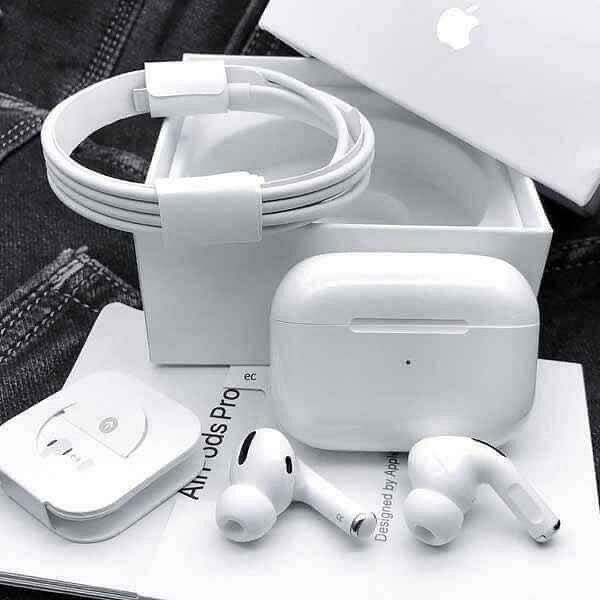
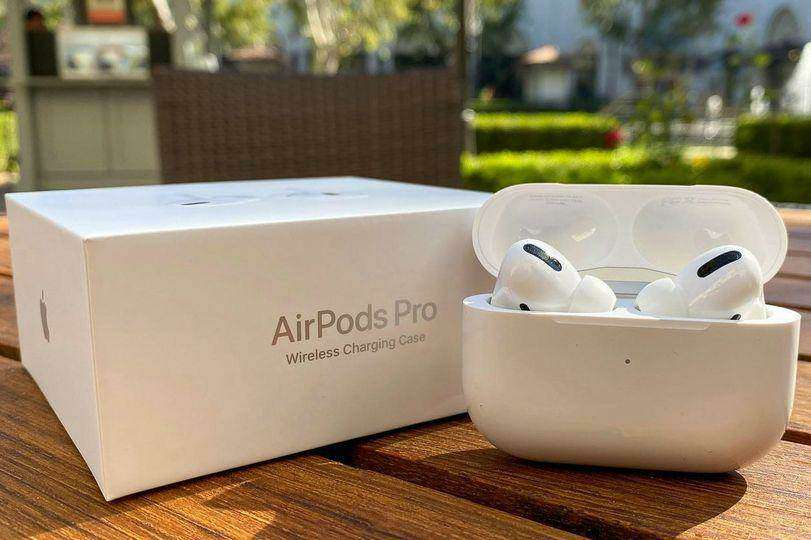
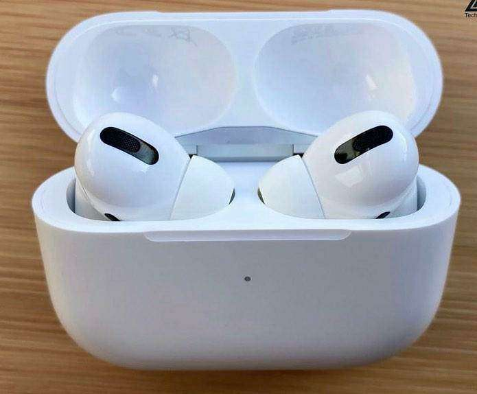

Fiche technique de AirPods Pro :
C'est quoi un AirPods Pro:
es AirPods Pro, d'Apple, sont des écouteurs true wireless intra-auriculaires dotés d’une réduction active du bruit. Ils sont livrés avec
un boîtier de charge, rechargeable en filaire ou sans fil (compatible Qi). | Lire la suite
FICHE TECHNIQUE :
CARACTÉRISTIQUES TECHNIQUES:
| Famille de casques: | Casque Bluetooth |
| Modèle: | Oreillettes intra-auriculaires True Wireless |
| Type de casque: | Ouvert |
| Restitution du son: | Stéréo |
| Type d'interface audio: | Bluetooth 5.0 |
| Poids (avec cordon et piles): | 10 g |
| Type de microphone: | Fixe |
ACCESSOIRES:
| Câble rallonge: | Non |
| Housse ou boîtier de transport: | Oui |
| Nombre de câbles fournis: | 1 |
AUTONOMIE:
| Type d'alimentation: | Batterie(s) non amovible |
| Autonomie annoncée: | 4 h 30 mn |
Photos pour le produit:
